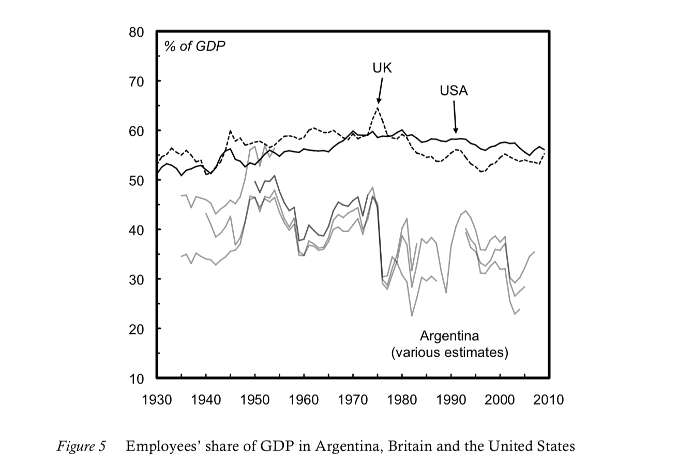
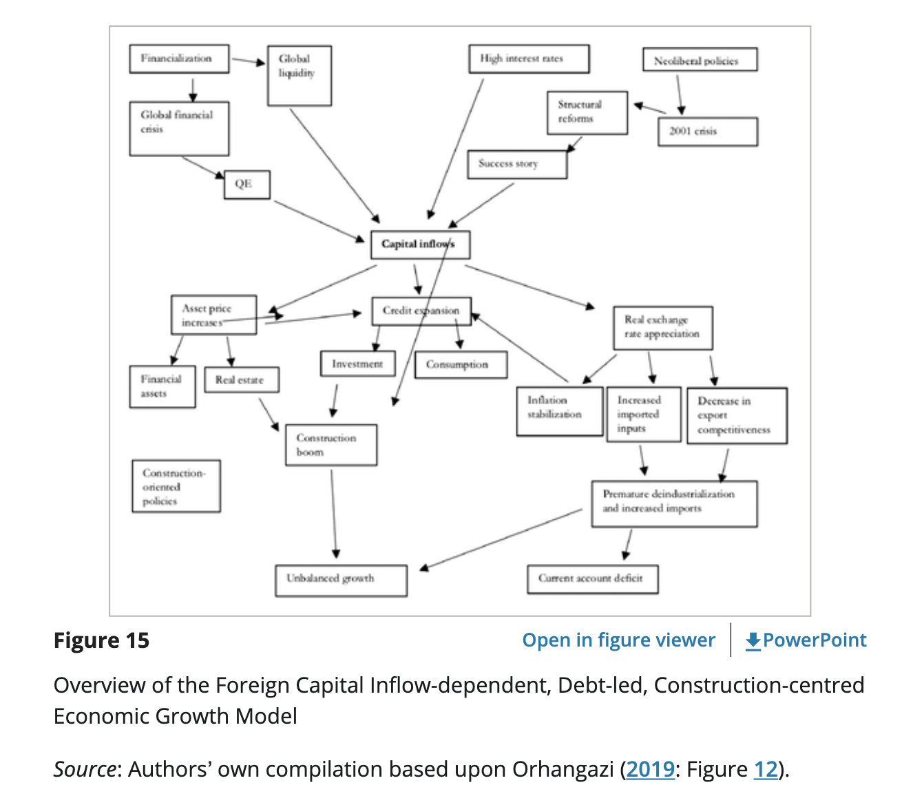

7 Countries (Recs File as of 230911)
7.1 Argentina
Argentina traditionally has a lot of inflation, so it’s a good place to look for evidence; this is also probably why it produces so many great macroeconomists-

7.2 China
China basically destroyed every idea western intellectuals had about economic growth and development. Practically nobody admits how embarrassing this is for economists and political scientists.


(Yuen Yuen Ang)
I think Acemoglu’s focus on democracy and non-extractive institutions is a bit of outlier in the growth lit, which mostly would contend that China’s high levels of average human capital and physical capital investments should lead to substantial growth.
I think China actually is democratic and non-extractive at the local level, something that Acemoglu misses by focusing on national stuff. A big part of the post-Mao reforms was turning local development over to local governments and making them accountable for performance.
To be honest China since Deng Xiaoping has followed the Fredrich List- Alexander Hamilton form of political economy. They are following the same policies from Meiji Japan and Imperial Germany.
Roberts
Godfree Roberts Writes Here Comes China Newsletter Dec 26
When Mao stepped onto the world stage in 1945 his country was convulsed by civil war, Russia had taken Mongolia and a piece of Xinjiang, Japan still occupied three northern provinces, Britain had taken Hong Kong, Portugal Macau, France pieces of Shanghai, Germany Tsingtao, and America dominated the opium trade.
In 1949 China was agrarian, backward, feudalistic, ignorant and violent. Of its four hundred million people, fifty-million were drug addicts, eighty percent could neither read nor write and life expectancy was thirty-five years. Peasants paid seventy percent of their produce in rent, women’s feet were bound, desperate mothers sold their children in exchange for food and poor people, preferring slavery to starvation, sold themselves. U.S. Ambassador John Leighton Stuart reported that, during his second year in China, ten million people starved to death in three provinces. The Japanese had killed twenty-million and General Chiang Kai-Shek wrote that, of every thousand youths he recruited, barely a hundred survived the march to training base.
By 1974 Mao had doubled the population, doubled life expectancy, reunited, reimagined, reformed and revitalized the largest, oldest civilization on earth, modernized it after a century of failed modernizations, liberated more women than anyone in history and ended thousands of years of famines. A strategist without peer, political innovator, he was a master geopolitician and a Confucian peasant, under crushing embargoes Mao had grown GDP by 7.3 percent annually and left the country debt-free.
Harvard’s professor of Chinese Studies, John King Fairbanks, summarized[1] his legacy: “The simple facts of Mao’s career seem incredible: in a vast land of 400 million people, at age 28 with a dozen others to found a party and in the next fifty years to win power, organize, and remold the people and reshape the land–history records no greater achievement. Alexander, Caesar, Charlemagne, all the kings of Europe, Napoleon, Bismarck, Lenin–no predecessor can equal Mao Tse-tung’s scope of accomplishment, for no other country was ever so ancient and so big as China. Indeed Mao’s achievement is almost beyond our comprehension”. [Fairbanks, The United States and China].
Looking back through the lens of economic habits, practices, stats and reports, we can impute the scale of Mao’s achievement. He’s called the founder of modern China because he designed and laid the foundation on which the economy and civil society rests. In doing so, he rejected, for example, the Soviet practice of building gigantic, centralized industrial facilities in the name of ‘efficiency’ and instead created the most decentralized (to this day) economy on earth. And that’s less than 1% of his foundational role.
These three articles examine each of Mao’s most famous campaigns:
http://www.unz.com/article/mao-reconsidered/?highlight=mao
http://www.unz.com/article/mao-reconsidered-part-two-whose-famine/
http://www.unz.com/article/the-great-proletarian-cultural-revolution/
(Comment to https://branko2f7.substack.com/p/four-historico-ideological-theories-628)
Michael Roberts
The real challenge for China’s economic future is how to avoid much of its investment going into unproductive areas like finance and property. It is China’s large capitalist sector that threatens China’s future prosperity.
Michael Roberts (20223) China zigzagging
Tooze
This China that we are casually generalizing about, is a state whose population is the same as that of North America, South. America and all of Europe put together, under almost 80 years of uniquely transformative rule by a historically unique and still dynamic political party that directly inherits the DNA of the revolutionary era and self-consciously orientates itself towards avoiding the fate of the only regime to which it can, at a pinch, be meaningfully compared, namely the Soviet Union.
Tooze (2023) Whither China? Regime impasse
7.2.1 Housing
Tooze
43 percent of all homes in China had been built since 2010, 68 percent since 2000 and 88 percent since 1990. If you put this in relation to total population it implies that in a single generation, China has built enough homes to house a billion people.
It is the demand for concrete and steel generated by this giant construction boom that has made Chinese growth so dirty. It is important to emphasize this point. As a driver of energy consumption, the rehousing of hundreds of millions of people, dwarfs China’s role as an exporter.
What China needs is not more physical construction but a burst of institutional state-building. What China needs is a welfare state adequate to its new status as a high-middle income country and that will require a new fiscal constitution.
Tooze (2023) Can Beijing halt China’s housing avalanche?
Roberts
‘Productive’ investment growth has fallen back in China. Investment in new technology, manufacturing etc has given way to investment in unproductive assets, particularly real estate. In my view, successive Chinese governments made a big mistake in trying to meet the housing needs of its burgeoning urban population by creating a housing for sale market, with mortgages and private developers being left to deliver. Instead of local governments launching housing projects themselves to house people for rent, they sold state assets (land) to capitalist developers who proceeded to borrow heavily to build projects. Soon housing was no longer “for living but for speculation” (Xi quote). Private sector debt rocketed – just as in the real estate bubble in the West. It all came to a head in the COVID pandemic as developers and their investors went bust. The real estate crisis has remained unresolved.
What the Chinese government needs to do is take over these large developers and bring them back into public ownership, complete the projects and switch to building for rent. The government should end debt payments to foreign investors and only meet obligations to small investors; and transfer housing out of the mortgage and private finance system.
The real estate sector has got so large in China as a share of investment and output that it has seriously degraded overall growth. This is where the economy does need rebalancing.
China’s private sector has mushroomed in the last two decades. It has led to an unhealthy expansion of billionaires and rising inequality of wealth and incomes. And just as in the West, as the profitability of productive capital fell, the capitalist sector switched into unproductive investment areas, like finance and real estate. Debt has rocketed. This has increased the risk of economic crises as in the West.
Contrary to the views of the Western experts and Li, it’s not less investment and more consumption; not less public and more private investment that China needs to sustain its previous economic success, but the opposite.
7.2.2 Global Integration
Benjamin Selwyn
At least since President Barack Obama’s pivot to Asia, have responded by formulating political, economic, and military strategies to constrain China’s rise.36 This containment strategy represents an attempt to maintain China in a semi-peripheral position by forestalling its attempts at becoming part of the core of the world economy. As Minqi Li puts it, “although China has developed an exploitative relationship with South Asia, Africa, and other raw material exporters, on the whole, [it] continues to transfer a greater amount of surplus value to the core countries in the capitalist world system than it receives from the periphery.”
Selwyn (2023) Limits to Supply Chain Resilience: A Monopoly Capital Critique
7.2.3 Ming, Qing and the Century of Humiliation
Noah Smith
The Ming and Qing dynasties that ruled China from 1368 to 1911. The conventional wisdom is that during this period, China turned its back on the outside world and on new technologies, choosing instead to look inward and cultivate a tranquil, harmonious, static society. The Ming burned their oceangoing ships in the 1500s and sealed the country off from most trade. In 1793, the Qing emperor declared to a British trade mission that “Our Celestial Empire [has] no need to import the manufactures of outside barbarians.” That isolationism was brought to an abrupt end when China’s technological backwardness and military weakness made it incapable of resisting foreign aggression in the 1800s, leading to the “century of humiliation”.
7.2.4 Turchin’s Model applied to China
Milanovic
Turchin’s model applies to China (not discussed in the book) probably as well as to America. The relative immiseration of the median class has gone on for the past forty years. Indeed, it went hand-in-hand with its phenomenal increase in material well-being, to the clip of almost 10% per year, and is thus less noticeable. At the top end of the distribution, the political/administrative class that has historically ruled China is opposed, still very cautiously, by the rising capitalist/merchant class. In a paper by Yang, Novokmet and Milanovic, we have documented and analyzed probably the most radical change —short of a revolution—in the composition of the elite ever. That has occurred in China between 1988 and 2013. Economic growth has displaced the administrative class in favor of those linked with the private sector (capitalists).
7.3 Ghana
Smith
Ghana’s government, however, didn’t decide to inflate the debt away; instead it just defaulted. This was a wise move. 58% of Ghana’s government debt is owed to foreigners, so defaulting on this drastically lowers the country’s overall government debt burden even as it also makes the government less vulnerable to further downward currency movements. The default will hurt, for sure, but it will also restore confidence and make it much easier to get a bailout from the IMF — which Ghana is currently doing.
In other words, Ghana basically did a speedrun of its emerging market crisis, getting the pain over with and skipping to the recovery phase. Ghana defaulted before A) the exchange rate crashed severely, or B) the central bank was forced to hyperinflate.
It appears that Ghana’s leaders have become addicted to the cycle of debt and bailout — this is the 17th time the IMF has helped them out of debt
So much of the borrowed money was spent trying to start an oil industry. Ghana is a poor country that needs to escape poverty any way it possibly can, but at the same time, its fundamental challenge is escaping the Resource Curse. Investments should be focused on manufacturing — on infrastructure, education, and capacity building, and perhaps on export incentives. If Ghana’s oil industry had worked out, its economy just would have become a bit more like Nigeria’s — and that is not a desirable goal.
Noah Smith (2022) Ghana you were doing so well
Tooze
On December 13 Ghana reached staff-level agreement on a $3 bn IMF credit package. In addition it is seeking to negotiate a 30 percent haircut with private creditors on tens of billions in bonds. Already in September Ghana’s 2026 eurobonds plunged to a record low of 59.30 cents on the US dollar. By the end of October yields had surged to 38.6 %, up from less than 11% at the end of 2021. Meanwhile, inflation is headed to 40 percent and the cedi is the worst performing currency not just in Africa but of all currencies in the world.
You could shrug and say that this is Ghana’s second IMF deal in 3 years and its 17th since independence in 1957. Plus ça change. But it is more than a national crisis. It is the latest sign that the entire model of market-based development financing is in crisis.
The fact that borrowers like Ghana find themselves in trouble at this moment is not surprising. The hiking of interest rates occurs in waves and whenever it happens it hits the weakest. We don’t call it a global dollar credit-cycle for nothing. This year, as the Fed has hiked, the average emerging-market dollar yield has doubled to over 9%. Debt issued by stressed frontier market borrowers has seen yields surging to 30 percent or more.
But to treat the news from Ghana as “just another predictable crisis”, is to trivialize and to fail to grasp the significance of the current moment.
Ghana is an important African success story. In recent times it has been the site of sustained efforts to improve labour practices and the terms of trade for peasant cocoa farmers. In 2020 its stress-free elections contrasted favorably to the democratic anxiety in the United States. Ghana has been praised for its efforts to extend health insurance to 70 percent of the population, topped up with cash benefits for the poorest. Accra boasts a vibrant fashion and design culture. The interior is touted as destination for adventurous trekking tourists.
An ample flow of money was key to this success story. And not just the volume of funding mattered, but how it flowed.
The Ghana crisis matters beyond its immediate impact, because it was the poster child for this[development] model of private finance. Ghana issued its first eurobond for $750mn in 2007 and has since become a leading example of a country financing development through private borrowing abroad.
And beyond the resolution of any particular debt crisis the next question that must be top of the agenda is simply: what comes next? If debt is not sustainable, how is Africa’s urgent and huge need for capital to be met? The current level of poverty across much of Africa and the pressure of population growth can make calculations of debt sustainability and long-term viability seem quaint. Africa has no long-term, sustainable future without investment.
Ghana illustrates this pressure in microcosm. At independence in 1957, at the beginning of its trajectory of repeated renegotiations with the IMF, Ghana’s population was roughly 6 million. Today Ghanas’s population is 33 million, more than five times larger. Ghana’s capital Accra is now one of the hubs in a giant conurbation that stretches from Abidjan in Ivory Coast to Lagos in Nigeria. This huge and rapidly growing population desperately needs capital investment to meet basic needs, let alone keep up with rapidly-developing Asian economies.
Tooze (2022) Chartbook #181: Finance and the polycrisis (6): Africa’s debt crisis
7.4 India
Tooze
For deeper historical perspective on India’s growth outlook, you may wish to pick up Ashoka Mody’s typically fiery interpretation of India’s economic development since independence, which is being released by Stanford University Press this month.
Trigger warning: Mody’s treatment is a no bolds barred attack on “India boosterism”:
Challenging prevailing narratives, Mody contends that successive post-independence leaders, starting with its first Prime Minister, Jawaharlal Nehru, failed to confront India’s true economic problems, seeking easy solutions instead. As a popular frustration grew, and corruption in politics became pervasive, India’s economic growth relied increasingly on unregulated finance and environmentally destructive construction. The rise of a violent Hindutva has buried all prior norms in civic life and public accountability.
Mody does not deny the growth, which in recent decades has lifted hundreds of millions out of absolute poverty. But he also highlights mounting inequality, which now places India alongside South Africa and Brazil as one of the most unequal societies on earth.
India Stack
In many of the ex-colonies of European empires, biometric technology systems are being built under an ethos of welfare and financial service delivery. One case in this broader trend of postcolonial governance is India’s Aadhaar and India Stack. This paper uses this case to explore how the in-sourcing of technology into means of governing, behind a front of participatory “good governance,” is contributing to the historical trajectory of citizenship regimes in India. Through claims of reducing financial “leakages,” Aadhaar, a biometric identification database consisting of fingerprint, iris scan, and photograph, has become compulsory for accessing welfare in India. The Indian government makes a case for Aadhaar using a propaganda discourse of its success, based on weak evidence. The India Stack, a set of cloud-based application programming interfaces (APIs) built on top of the Aadhaar database, offers a digital infrastructure for private companies to verify identities using Aadhaar data and to offer other “services” including “financial services.” The ability to access data, paired with a “revolving door” of individuals between state and corporations, points to an ulterior goal of both Aadhaar and the India Stack: creating winners in the corporate and financial technology sectors. The Indian corporate-state run through a “governtrepreneurism” uses Aadhaar and the India Stack as new digital technologies of governmentality to transform populations into subjects or customers.
Delhi is selling “India Stack Global” as a model for tech and governance solutions worldwide, but particularly for middle- and low-income countries.
You cannot understand the genuine mass appeal of Prime Minister Modi and the BJP unless you recognize the way in which they have managed to associate themselves with a real and very dramatic transformation and at the same time to cast their opponents as those who for so many decades failed to deliver even the most basic services for India’s population. Following the Gujarat model of privatized infrastructure model, corporate interests are not shamefaced but front and center in this vision of nation-building. Nation-building is the key boast of the Adani group. And it is that model that is at stake in this crisis.
Tooze (2023) Indian nation-building, Modi and the Adani crisis
Noah Smith
Unlike China, India has grown to its current level without industrializing — that is, without increasing manufacturing’s share of the economy.
Basically, I think India has most of the raw ingredients necessary to industrialize. In particular, it has built an impressive amount of infrastructure in recent years, and is building much more, shoring up a key longstanding weakness. And high-speed rail is being built, using the same trains as Japan’s shinkansen. The India of unreliable slow trains and dirt roads is rapidly vanishing into history.
If India has one remaining weakness, it’s education.
In the West, those on the political Left have a curious tendency to downplay India’s growth and pooh-pooh its future chances. It is up to India’s leaders to prove these naysayers wrong.
But I am reasonably confident that they will, and the reason for my confidence has nothing to do with willful optimism or a mystical faith in the effectiveness of India’s people and India’s government. The reason is called “agglomeration effects”.
With production costs no longer low in China and geopolitical risk rising, multinational companies are going to be looking for alternative places to put their factories and offices. And those alternatives are likely to be in other parts of Asia, rather than in Latin America or Africa or elsewhere, in order to be close to existing supply chains and manufacturing expertise and sources of capital. And India is really the only other part of Asia whose sheer scale has any hope of matching that of China.
Apple is starting to bet big on India, shifting production of a variety of products. In 2021, only 1% of iPhones were made in India; two years later, it’s approaching 7%, with a planned increase to 40-45%.
Unlike China, India doesn’t mount a massive government campaign to copy (or steal) the technology of multinational companies that invest there, then transfer that technology to state-supported domestic champions. And although India has plenty of regulation, it doesn’t have China-like arbitrary state control that reaches into every economic sector in ways that are difficult for multinational companies to anticipate.
Comments on Smith
“Indian polity revolves around those who believe that India went through single colonization (European) vs those who believe India went through double colonization (Islamic and European)” Everything about Indian politics will make sense if one understands above statement.
7.5 Italy
Tooze
How much growth does Italy really need? I don’t want to engage in the degrowth debate here. But Italy is also interesting from that aspect. By most reasonable criteria, despite this stagnation in gdp per capita, the standard of living in Italy for a large majority of the population is very attractive, enviable indeed. Behind a rawlsian veil of ignorance, would you pick a “success story” like the United States over Italy?
There are very real deficits of an institutional kind, in technical modernization, not to mention the future problems of the climate, energy transition etc. What Italy needs is not brute-force growth at any price, but faster, “smart” growth, reform of institutions to improve everyday life, above all in the legal system and state administration, and a major investment in its education system, which currently fails far too many young Italians.
7.6 Jamaica
Smith
Jamaica is classified as a middle-income country by the World Bank. In terms of GDP per capita (PPP), it’s at about $10,000, putting it somewhere in the same neighborhood as Vietnam, Tunisia, or Jordan. That’s rich enough for Jamaicans not to starve, and for most to have generally decent living situations, but not enough to eliminate extreme poverty or create the kind of broad middle class we’d recognize as such in a developed country.

Jamaica’s socialist policies in the early 70s — nationalization of industry, import barriers, subsidies for basic goods, high deficits, and so on — did long-term damage, while Barbados’ relatively neoliberal policies avoided hurting its economy much during those troubled years.
This, if true, would be a pretty direct rebuke to the ideas of people like Ha-Joon Chang, who argue that nationalization, import barriers, and tolerance of rapid inflation are a more effective growth strategy than the traditional “neoliberal” orthodoxy of privatization, free trade, sound money, and balanced budgets. And interestingly, Jamaica’s more leftist turn in the 70s didn’t result in enduringly lower inequality than Barbados — the two countries’ Gini coefficients are almost equal, both in the mid-40s.
The more important question here has to be why Jamaica hasn’t seen a takeoff in growth, the way the Dominican Republic. has. Remember, a growth takeoff — rather than simply stagnation at a higher level — is the ultimately goal of “development state” policies like those recommended by Ha-Joon Chang.
It might be that each country just has to wait its turn in line, waiting for the so-called “flying geese” of global capital to decide that this is the next place to produce shoes and clothes and toys. Under this theory, countries can at best hope to cut in line by having slightly better education and infrastructure than the next country over.
But if we assume there is something countries can do to jump-start industrialization, then the best candidate for what they can do is the “development state”. My favorite formulation of this is in the book How Asia Works, which — though it doesn’t get everything quite right — is the simplest and most reasonable guide to the basic idea. The author, Joe Studwell, distills the experiences of successful East Asian industrializers into three basic steps:
Land reform, to employ the rural population and raise farm output while freeing up landlords to start manufacturing companies
“Export discipline”, meaning a country promotes exports in manufacturing industries as a tool to absorb foreign technologies, learn how to climb the value chain, and generate foreign exchange
Financial repression, meaning that the finance sector is forced to fund manufacturing and exports rather than putting all its money in stuff like real estate or Bitcoin or whatever.
On land reform, Jamaica fails badly; concentrated land ownership and widespread tenant farming is a big reason for its continued high inequality. The Jamaican Left keeps proposing land reform, and it keeps not getting done. This is probably depriving Jamaican manufacturing of talent; a number of the country’s richest and most well-educated people are engaged in relatively unproductive landlording instead of starting the next Hyundai or Samsung.
How about export discipline? Here, Jamaica faces a more formidable enemy than political gridlock — its own abundance of natural resources. Jamaica has huge reserves of bauxite, which is used to make aluminum. This accounts for an enormous percentage of its exports.
Exporting aluminum-related minerals makes Jamaica’s currency more expensive (since it means other countries have to buy a lot of Jamaican dollars in order to buy the minerals). That makes Jamaican exports less competitive. This is known as “Dutch disease”.
The second problem posed by resource abundance is high wages. Yes, we all think high wages are good, but if you’re trying to get in on the cutthroat game of global manufacturing exports, you need to start at the bottom, with simple low-value activities like making clothes and toys and light electronics assembly. This is how Bangladesh and Vietnam — and, indeed, the Dominican Republic — kicked off their own exponential growth. But with a per capita GDP of around $10,000 in 1990, Jamaica was much richer than Vietnam or Bangladesh or the D.R. In fact, it’s still richer than the first two.
Because it had so much bauxite (and, possibly, so much tourism), Jamaican wages were necessarily uncompetitive when they needed to be competitive.
In fact, Jamaica did make a big push for export-oriented industrialization, starting with exactly the kinds of labor-intensive light manufacturing industries that have worked well for the successful industrializers. Established in the 1970s and 1980s, the Jamaican Free Zones were similar to China’s Special Economic Zones — they provided tax exemptions for businesses, facilitated foreign investment, and favored export-oriented industries like textiles.
But the Free Zones never took off. Even with all the tax breaks, Jamaican manufacturing was just never competitive. In an economy that’s used to middle-income living standards, the low wages and brutal conditions necessary to be competitive in labor-intensive manufacturing just didn’t provide people with what they considered to be decent work.
Whereas Bangladeshi and Vietnamese workers would endure harsh conditions for a while but eventually get better lives as companies learned how to do more complex manufacturing, Jamaica’s high starting wages short-circuited that process. If industrialization is a process of learning to walk before you learn to run, then according to this theory, Jamaica was born with a fancy aluminum wheelchair.
This might be the brutal, unfortunate truth for developing countries — those that are endowed with plentiful natural resources might simply be destined to start out ahead but eventually fall behind.
The fact is, we don’t really know how economic development happens, and to put too much faith in the Chang/Studwell story would be unwise. After all, the Dominican Republic is pulling off a successful manufacturing-based industrialization, and yet its top export is still gold. So having resource endowments doesn’t ensure stagnation; Jamaica still has a chance.
With the rise of highly complex service industries, there’s always the chance that Jamaica may in some sense be able to “leapfrog” to higher-value activities. Jamaica is trying to do this with the Jamaica Logistics Hub, which envisions the island becoming a waystation for trade throughout the Caribbean and Latin America. This can be a good strategy for a small country — is has worked well for countries like Dubai and Singapore, each of which is actually more populous than Jamaica.
Becoming a logistics hub will involve a lot of new infrastructure — in fact, China is helping Jamaica build out its facilities. Ports, roads, and various processing facilities are all being built. According to some sources, the country is now investing about a quarter of its GDP, almost as good as Vietnam, up from about a fifth of GDP five years ago.
Jamaica has avoided becoming a kleptocratic basket case like many resource exporters. Jamaica is doing OK, but it deserves to be a rich country. It just has to keep experimenting until it finds a model that will get it there.
Smith (2021) Jamaica is doing OK Could it do better than OK?
7.8 Peru
Reinert
Looking at the example of Peru since 1950, waves of industrialization and deindustrialization have been associated with fl uctuations in living stand- ards. Th e standard of living of the population has been inversely related to the weight of the primary sector in the total economy. During the period 1950–1997, a one percentage point decrease in manufacturing as a share of GDP led to a fall in white-collar wages by 5.4 per cent, and a fall in blue- collar wages by 7.5 per cent. Conversely, when manufacturing increased by one percentage point in total GDP, white-collar and blue-collar real wages increased by 10.6 and 15.5 per cent respectively (Roca and Simabuko 2004). Going back to Carey’s map, we can conclude that every time manufacturing increased as a percentage of GDP, this corresponding to ‘moving east’ on the Carey map: wages went up. Every time the manufacturing sector shrank, it corresponded to ‘moving west’ on the Carey map: wages went down. Figure 1.4 shows how real wages in Peru peaked in the mid-1970s when the country did everything ‘wrong’ according to the Washington Consensus. Peruvian industry was kept up by high tariff s and represented a ‘bad’ form of protection. Industrialization was ‘artifi cial’, but the wages, roads, schools and hospitals created by this industrialization were all real. It is also impor- tant to see how exports took off and made the country look very successful while real wages were plummeting at the same time. Th e Washington Con- sensus shock therapy hit Peru on two fronts simultaneously—with deindus- trialization plus downsizing the public sector. By killing off the two sectors with strong union power—one private, one public—the whole national wage level collapsed. Th is was accompanied by a rapid fall in the terms of trade.
Peruvian wage levels fell much faster than GDP, as the composition of Peru- vian GDP changed. Figure 1.5 shows how dramatic this change was. At the height of industrialization in Peru in 1972, wages amounted to 51.2 per cent of GDP and the income of the self-employed was 26.5 per cent, a total of 77.7 per cent of GDP. Figure 1.5 shows how wages, salaries and the income of the self- employed shrank rapidly as the country prematurely opened up to free trade. In 1990, the last year the Peruvian central bank provided a breakdown of GDP in this way, the share of wages in GDP had been almost halved to 26.5 per cent, and the share of the income of the self-employed had fallen to 15.9 per cent. In total, the wages, salaries and the income of the self-employed as a share of GDP had shrunk by 45 per cent—from 77.7 to 42.4 per cent of GDP—as a result of Washington Consensus policies from the mid-1970s to 1990. Th e ‘national industrial rent’ had been destroyed, with devastating consequences for real wages that had been more than halved in real terms.

7.10 Saudi Arabia
Tverberg
Saudi Arabia does not seem to be using recent record profits to quickly raise reinvestment to the level that seemed to be required a few years ago. This suggests that Saudi Arabia needs prices that are quite a bit higher than $100 per barrel in order to take significant steps toward extracting the country’s remaining resources.
Tverberg (2022) Why No Politician Is Willing to Tell Us the Real Energy Story
Messler (2022) Saudi Aramco Is Taking A Page Out Of The U.S. Shale Playbook
7.11 South-Africa
Tooze
In the 1990s mining and minerals accounted for 40 percent of electricity consumption in South Africa. Conversely, electricity, even at heavily discounted tariffs, accounted for 32 percent of the intermediary costs of gold production. It takes 600 kwh to yield one fine ounce of gold. As a result, South Africa’s economy was estimated to be three times more electricity intensive per unit of gdp than the USA.
In 1970s as the South African apartheid regime faced the oil crisis, the escalation of the Cold War on the African continent in Angola and Mozambique and the Soweto uprising of 1976. The strategists of Apartheid began to fear what they called a “total onslaught” that would require the South Africa state to defend a last redoubt of white rule. For the power sector, as Andrew Lawrence argues, the implication was that Escom needed to dramatically increase capacity - to a gigantic total of 70 GW by the year 2000. A key element of this expansion drive was the nuclear power plant and weapons program at Koeberg
The last of the big 1980s projects was Majuba Power Station on which work began in 1983. Its last unit came into operation in 2001. At that point, Eskom had effectively doubled the available generation capacity to just under 40 000 MW. It was also the halting point for any further expansion.
At Eskom, Dr Ian McRae, who was appointed CEO in 1985 entered into clandestine contact with the ANC to explore options for expanding power supply to townships. Contrary to the racist legends of the regime, which denied the very idea that Black South Africans might use electricity, McRae found a huge repressed demand for electrical services.
Between 1991 and 2014, in the forefront of the National Electrification Program, Eskom would provide new electrical connections to 4.3 million households. That is almost a quarter of South Africa’s 15 million households. As a result of combined action by the ANC-led government, Eskom and local authorities, the share of households with power rose from 58 percent in 1996 to 87 percent of those in formal housing by 2013. At that point three quarters of informal shanty settlements had power connections too. From 2003 universal connection was encouraged by the introduction a basic ration of 50 kwh per month in free electricity for every household with a meter. It is this expansion of electricity supply, which defines the crisis of power supply as it is felt across South African society today.
The biggest beneficiaries of the power bonanza bequeathed by the apartheid-era expansion were industrial producers. In the 1990s and 2000s with the global resource boom in swing, South Africa’s abundant and cheap electricity made it a major investment location for aluminium production, stainless steel and ferro alloys. The coega aluminium plant owned by Alcan of Canada and then snapped up by RioTinto was to be one fo the biggest smelters in the world attracting huge South African subsidies as well as GW of power.
What unlocked the supply was flipping the risk so that customers made prepayment to their accounts for the electricity they were going to use. In effect hard-pressed consumers extended an advance to Eskom not the other way around. Unsurprisingly this made supplying them more attractive. As critics pointed out, Eskom retained the power to end supply as soon as the cash ran out. What ought by rights to be a social entitlement was turned into a commercial relationship governed by household budgeting. In short, an individualized, market-based, low-trust relationship typical of contemporary, neoliberal thinking about service provision.
Taking advantage of the apartheid-era capacity surge, electricity was cheap. Tariffs were progressively reduced to some of the lowest rates in the world. And under those circumstances, whatever the form of the supply relationship, it was hard to see electrification as anything other than a blessing.
In 1998 the White Paper on electricity proposed extending neoliberal visions to power supply. The White Paper proposed that Eskom be separated into two parts: the transmission system that would remain a monopoly and the generating side which would be thrown open to competition. This was the model of unbundling pioneered in Chile and the Uk in the 1980s and 1990s and that went on to be adopted by over 100 countries worldwide. The idea being that it disaggregated decision-making on price-setting and investment thus minimizing the risk of big mistakes and lowering costs to minimum.
On paper the unbundling vision prepared for South Africa by PwC looked good. It seemed like an obvious way to maximize competition in what might otherwise be seen as a natural monopoly sector. But like any other structural change it was a gamble. Crucially, it was not clear whether such a system could really provide incentives for long-term investment.
Before ESKOM could put in place the new regime of greater investment and price increases, disaster struck. Starting with a failure at the Koeberg nuclear power station at the end of 2005, South Africa’s over-stretched electricity system began to fall apart. From November 2005 rolling blackouts and load-shedding became a daily reality.
The blackouts were caused not by an absolute shortfall of capacity below demand, but by a lack of safe reserve capacity to deal with inevitable outages. From a high of 27% in 1999 the margin of reserve capacity had fallen by late 2007 to a dangerous 5 percent. In November 2007 a new series of power cuts began and by early 2008 Eskom and the government were forced to declare a national emergency.
South Africa’s first renewable energy plan had been drafted in 2003. But it was not until 2009 that the government hosted a nationwide conference on renewable energy in Pretoria. At the COP conference in Copenhagen in November 2009, South Africa’s government committed itself to reducing emissions by 34 percent by 2020 and 43 percent by 2025 - ambitious targets.
In 2009 the NESRA, South Africa’s regulatory agency, took the lead in introducing a feed-in tariff - known as the renewable energy feed-in tariff (Refit) - along the lines that Germany had pioneered.
The fossil fuel interests around Eskom - as opposed to the Department of Energy and NERSA - fought back hard. And they gained support from the outside. In 2010 in a controversial decision the World Bank gave its approval, worth $3.75 billion in loans, to Eskom’s giant Medupi coal-fired power plant, one of the two projected since 2004 and one of the largest coal-fired stations ever built outside Asia. Quite apart from environmental and climate impact, this cemented ESKOM’s ruinous commitment to implementing a giant investment program which its staff had no experience of managing. For a notional budget of R150 billion it planned to build not just the 4 764 MW Medupi plant, but the 4 800 MW Kusile coal-fired stations, plus the Ingula pumped storage scheme in the Drakensberg, which would deliver 1 332 MW of hydroelectricity during peak demand periods. Medupi and Kusile would end up costing three times as much. To this day, they have not reached full capacity. Funding needs far exceeded the World Bank loan, leaving Eskom hugely in debt. To keep up its payments it was forced to raise electricity tariffs at an extraordinary rate. In real terms between 2006/7 and 2017/8 Eskom’s customers would see electricity prices increase sevenfold.
Starting in 2013 electricity supply became chronically unreliable. As the new coal-fired power stations failed to come online and costs soared, ESKOM ran its existing generator stock to the point of collapse, whilst skimping systematically on maintenance. The overall impact was to stop dead in its tracks the growth in demand for power, which had been at the heart of the upbeat story of electrification up to 2006. South Africa shifted from being a society in which energy use was broadening and deepening to one in which economic growth depended on economizing on overpriced and unreliable electric power. Richer consumers resorted to buying their own generators. But industry was prevented from expanding so-called “embedded” power production by rules that barred connections for anyone generating their own power. It was a hobbling, unproductive, inefficient disaster, which helped to constrain South Africa’s lack-luster economic growth. GDP per capita stagnated in line with power consumption for most of the 2010s. Perversely, low growth helped to cap power demand on Eskom, cementing the low-level equlibrium.
7.12 Turkey
Tooze
Since the early 2000s Turkey has relied heavily on foreign borrowing (mainly by the private sector) to finance large current account deficits brought on by rapid growth. Erdogan had ridden a wave of capital inflows that were attracted to Turkey by slightly higher interest rate margins.

Figure: Systematically promote growth through construction rather than manufacturing, agriculture and exports.
Turkey’s economic experiment ran much longer than it should have, thanks to the more elastic supply of finance. The economic costs will be larger as a result.
Erdogan has long cultivated an economic ideology that consists of a brew of convenient fragments of Muslim doctrine, productivism, hostility towards outside pressure. He is prone to associating any critics with external threats.
Warring with Turkey’s secular business interests is now a key device through which Erdogan rallies his electoral troops.
He is egged on by advisors such as Cemil Ertem who systematically promotes the idea of politico-economic autonomy.
The main message given by Ertem’s presentation is economic independence. Over and over, he emphasises that it is impossible to be economically independent while carrying out a financial policy based on high interest rates or International Monetary Fund recommendations. Ertem asserts that a policy of high interest rates has triggered a vicious circle of low exports, lower employment, high imports, growing external debt and a country with an external dependence, which again requires higher interest rates, completing a full circle. “As a result, the country is posting a high current account deficit and depending on short-term hot money inflows and raising the external debt,” he says in the presentation. “This economic model, due to its external dependency, is laying [the] ground for economic attacks.” The chief economic adviser says his new model, based on lower interest rates, will increase exports and decrease imports, leading to a current account surplus and higher growth with high employment. He believes it will make Turkish exports more competitive with a depreciated lira. “We will incentivise foreign direct investments instead of short-term hot money inflows, and stabilise the foreign finances,” Ertem says. “And that’s how we will become a stronger country that is protected from the external financial shocks.”
Certainly the devaluations of recent years have had an effect. “exports jumped 33 percent in November, reaching $21.5bn, while the current account posted a $3.16bn surplus for October. Unemployment has also decreased, by about two percentage points, from 13.1 percent to 11.2 percent in October year-on-year. GDP grew by seven percent in the third quarter of 2021.”
With import prices soaring, the economic circumstances threaten to crush domestic demand; a recent 50 per cent rise in the minimum wage will wipe out the cost advantages of the currency depreciation.
For devaluation to yield dramatic benefits would require an industrial policy to back it up.
In recent months, as Erdogan launched another easing cycle, he has reportedly cited China’s economic transformation in the wake of 1978 reforms as evidence that his model would bear fruit.
It is economically crazy to think that a country can build an export-oriented economy simply on the back of a trashed currency.If that were the case, Zimbabwe would be a tech superpower.
Some businesses are gaining from the slide in the currency. Most of the companies listed on the Borsa Istanbul are benefiting from the weak lira - publicly listed airlines, defence groups, carmakers and chemicals producers as companies that enjoy foreign currency-denominated revenues and Turkish lira-denominated staffing costs. Erdogan is prioritising exporters over households.
Turk Dolar: The new tool, labelled the “Turkish dollar” by some on social media, offers a solution to this problem: if investors convert their foreign currencies into lira and deposit them in a savings account with a certain term of maturity, Turkey’s treasury guarantees that it will get the same return as forex markets. And if the forex markets drop below the official interest rates, the investor will still get an official interest rate return.
Tooze (2021) Turkey’s financial crisis
Özgür Orhangazi,A. Erinç Yeldan in Development and Change (2021)
Noah Smith
But there were always three flies in the ointment of Turkey’s long boom. The first was a reliance on external borrowing. The second was political instability, ultimately leading to bad macroeconomic policy. And the third was Erdogan’s bizarre love of low interest rates. The root of the problem was external borrowing. Turkey’s fairly high investment rate isn’t matched by an equally high savings rate, meaning that it has had to run a big current account deficit
While some of this investment was in the aforementioned productivity-boosting manufacturing industries, a fair amount went into real estate (encouraged by the Erdogan administration) and into grandiose construction projects undertaken by the government. Since many of these projects were undertaken or encouraged for populist political reasons, they didn’t earn a great return on investment and ultimately set the country up for a rapid reversal of capital inflows. The second factor making things worse was that a ton of Turkey’s external debt was short-term, leaving it even more vulnerable to a sudden stop in foreign investment. Let’s ask why Erdogan was so eager to encourage foreign investment into sectors that weren’t going to boost long-term productivity and set the country up for a crisis. The fairly obvious answer is political instability.
When populist leaders face challenges to their rule, a very common response is to pump up short-term economic growth in order to shore up political support, even at the expense of long-term productivity growth.
Erdogan needs to use his near-dictatorial power to channel investment away from speculative real estate or white elephant construction projects, and back toward manufacturing industries.
7.13 Ukraine
Alex Smith
About half of all wheat consumed in Lebanon in 2020 came from Ukraine, according to data from the Food and Agriculture Organization (FAO). Relying on bread and other grain products for 35 percent of the population’s caloric intake, Lebanon is critically dependent on Ukrainian wheat. Of the 14 countries that rely on Ukrainian imports for more than 10 percent of their wheat consumption, a significant number already face food insecurity from ongoing political instability or outright violence. For example, Yemen and Libya import 22 percent and 43 percent, respectively, of their total wheat consumption from Ukraine. Egypt, the largest consumer of Ukrainian wheat, imported more than 3 million metric tons in 2020—about 14 percent of its total wheat. Ukraine also supplied 28 percent of Malaysian, 28 percent of Indonesian, and 21 percent of Bangladeshi wheat consumption in 2020, according to FAO data.
Smith (2022) A Russia-Ukraine War Could Ripple Across Africa and Asia
Tooze (2022) Strategy of tension
Tooze on Cooper
In an impressive report from December 2022, Luke Cooper discussed the logic of “Market economics in an all-out-war?” that is at work in Ukraine. In the name of anti-corruption drives and austerity Kyiv seems wedded to a minimal state vision, whereas the opposite is actually required. “A genuinely modernizing economic strategy should start from ensuring the capacity of the state to protect its citizens and the environment. Investment in capital projects for a green transition, public services like healthcare and education, and the social safety net, will be critical to ensuring Ukraine’s long-term development.”